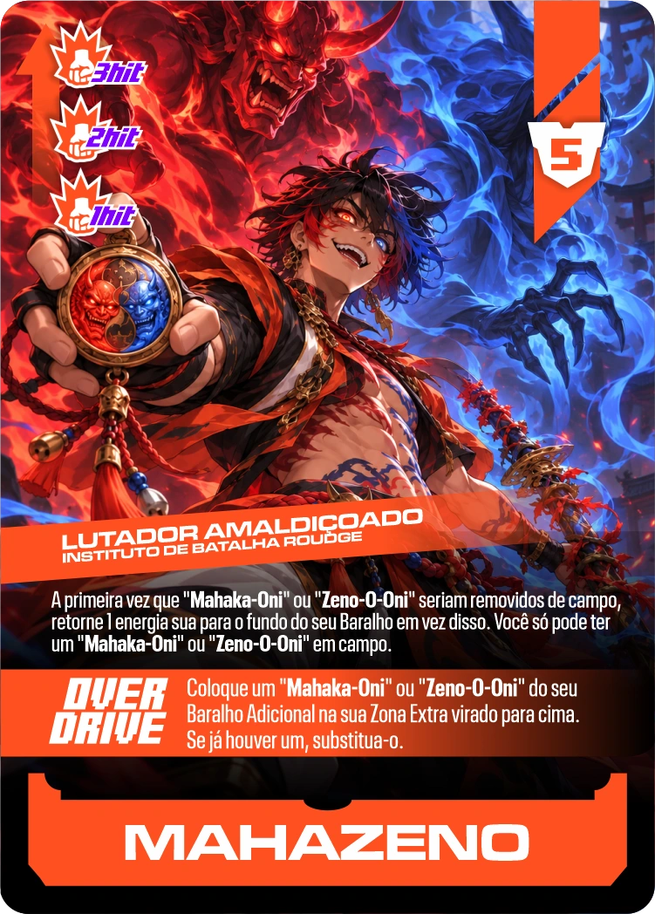
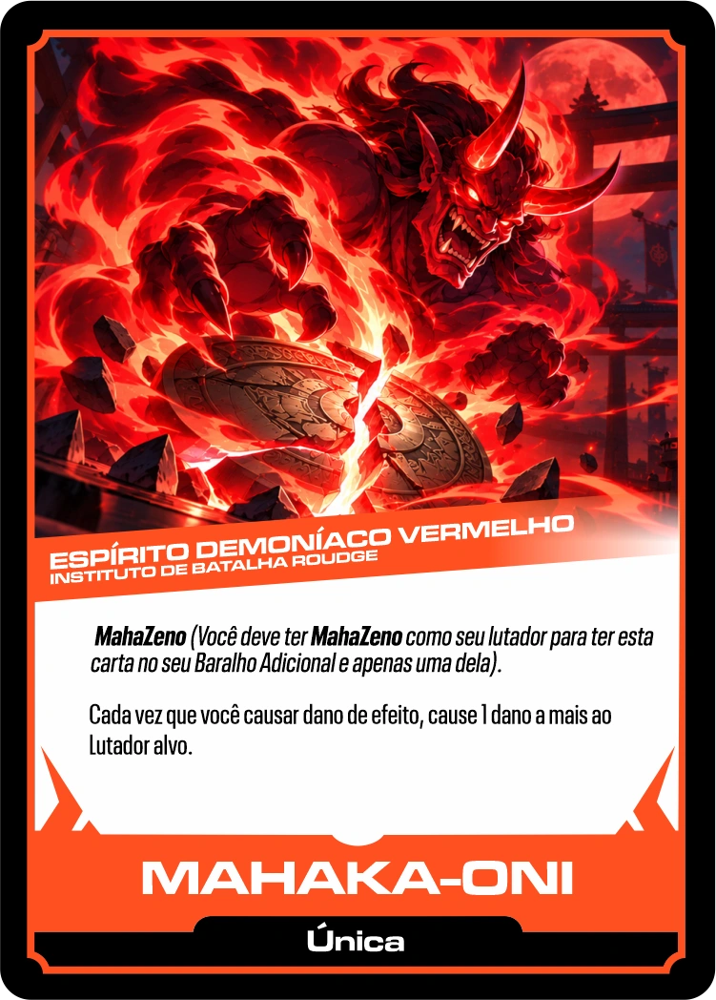
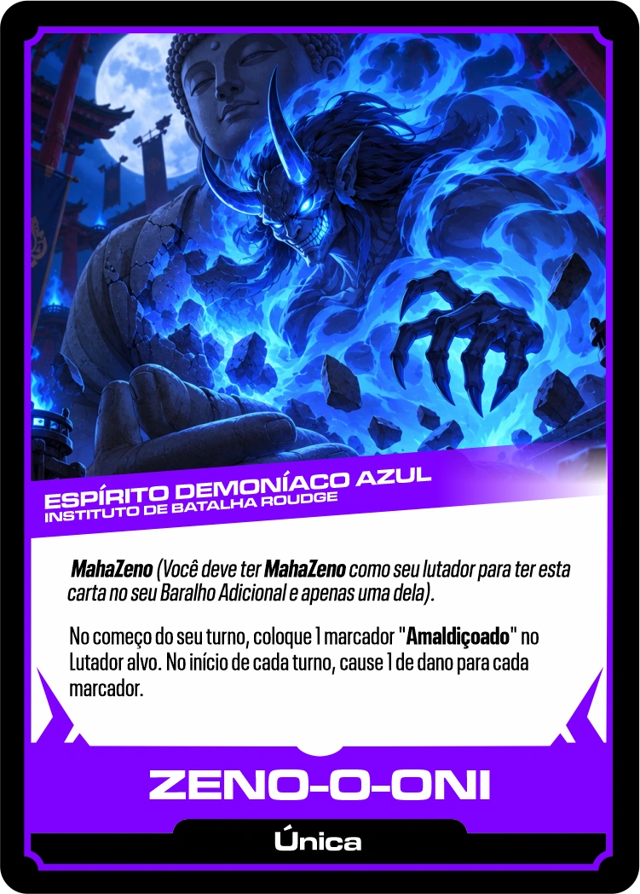
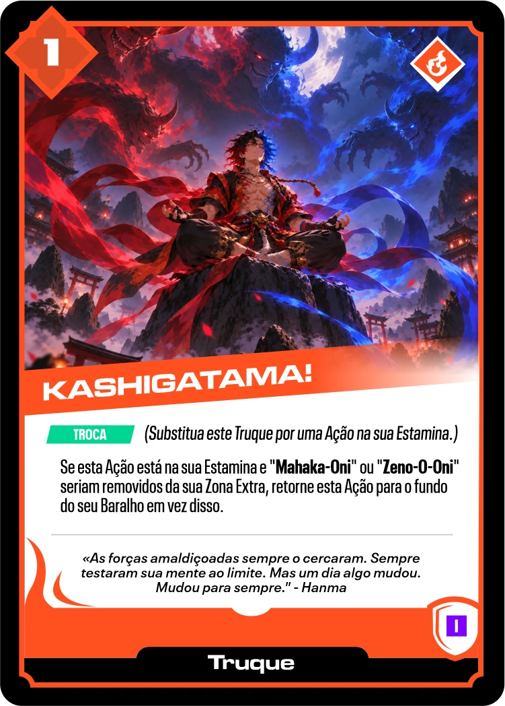
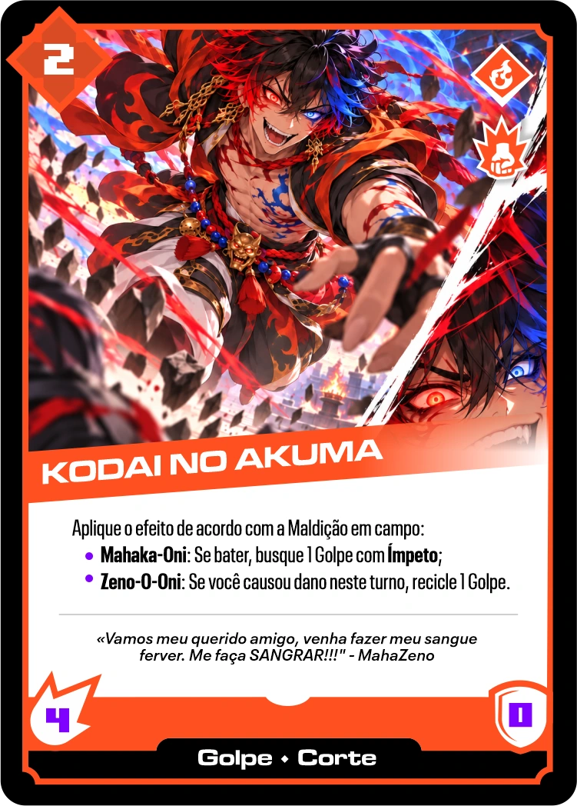
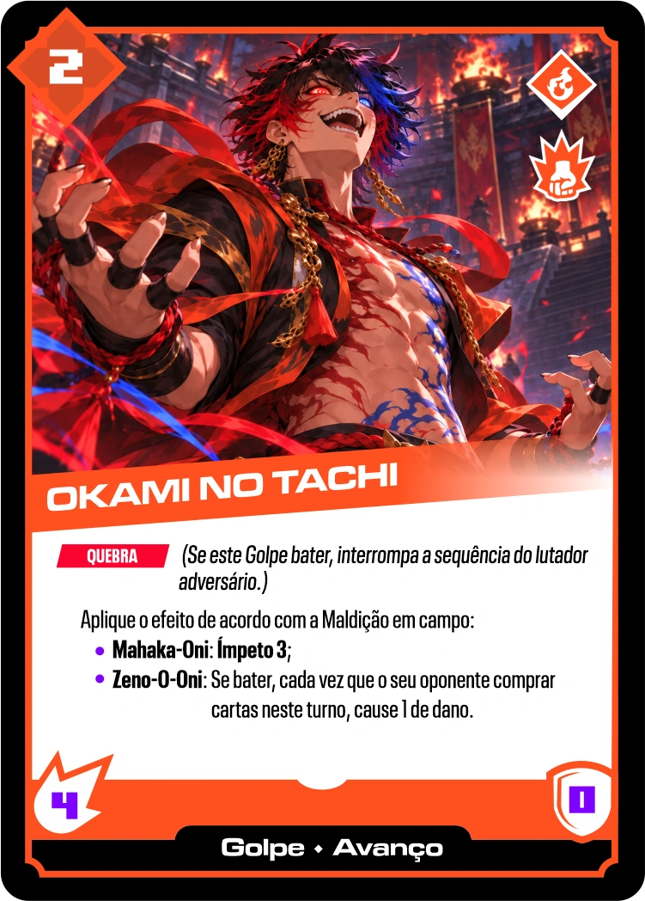
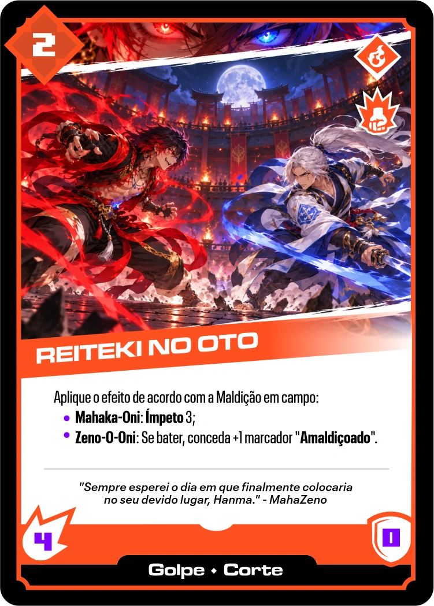
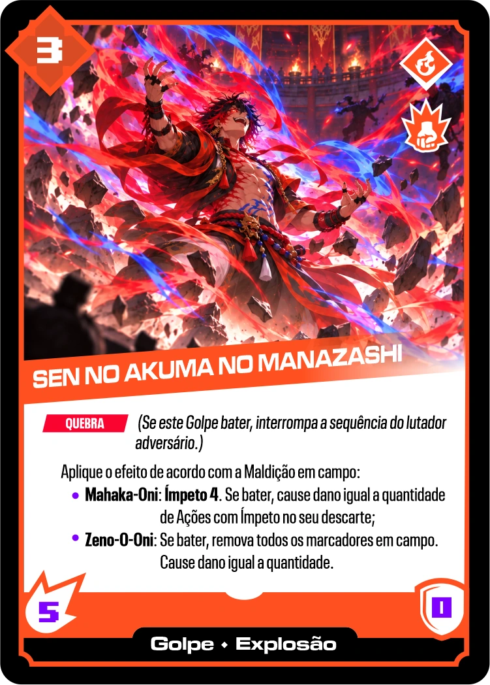
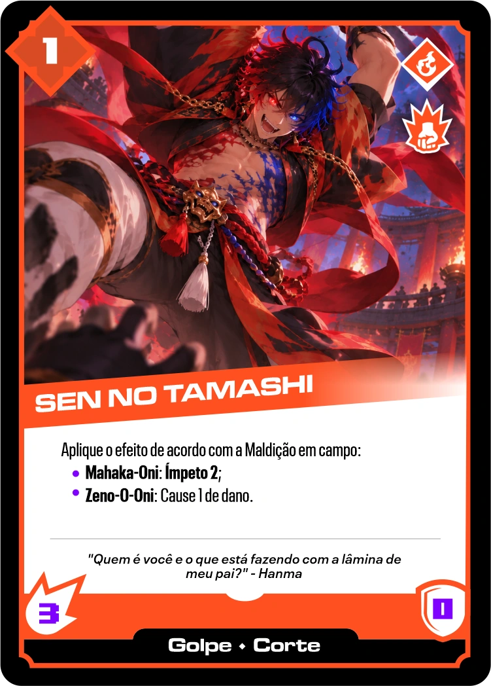
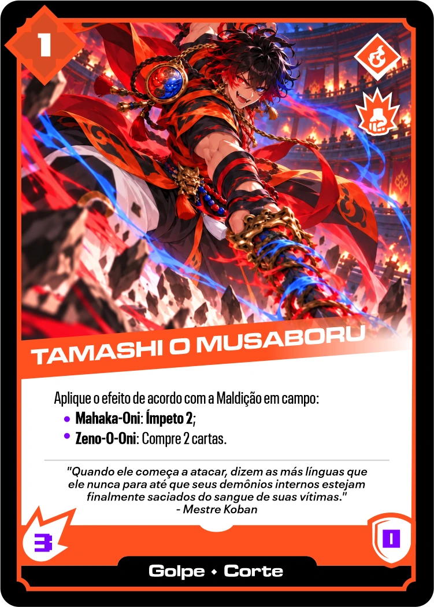

MahaZeno
A primeira vez que Mahaka-Oni ou Zeno-O-Oni seriam removidos de campo, retorne 1 energia sua para o fundo do seu Baralho em vez disso. Você só pode ter um deles em campo. OVERDRIVE: coloque um Mahaka-Oni ou Zeno-O-Oni do seu Baralho Adicional na Zona Extra, virado para cima. Se já houver um, substitua-o. A partida começa sem demônio.

Mahaka-Oni
MahaZeno. Apenas uma cópia no Adicional, somente com MahaZeno. Permanente especial; não é Ação. Cada vez que você causar dano de efeito, cause 1 dano a mais ao lutador alvo.

Zeno-O-Oni
MahaZeno. Apenas uma cópia no Adicional, somente com MahaZeno. Permanente especial; não é Ação. No começo do seu turno, coloque 1 marcador Amaldiçoado no Lutador alvo. No início de cada turno, cause 1 de dano por marcador. Os marcadores continuam causando dano após Zeno-O-Oni sair de campo.

Kashigatama!
TROCA: substitua este Truque por uma Ação na sua Estâmina. Se esta Ação está na Estâmina e um dos seus demônios seria removido da Zona Extra, retorne esta Ação ao fundo do Baralho em vez disso.

Kodai no Akuma
Mahaka-Oni: se bater, busque 1 Golpe com Ímpeto. Zeno-O-Oni: se você causou dano neste turno, recicle 1 Golpe.

Okami no Tachi
QUEBRA. Mahaka-Oni: Ímpeto 3. Zeno-O-Oni: se bater, cada vez que seu oponente comprar cartas neste turno, cause 1 de dano.

Reiteki no Oto
Mahaka-Oni: Ímpeto 3. Zeno-O-Oni: se bater, conceda +1 marcador Amaldiçoado.

Sen no Akuma no Manazashi
QUEBRA. Mahaka-Oni: Ímpeto 4; se bater, cause dano igual à quantidade de Ações com Ímpeto no seu Descarte. Zeno-O-Oni: se bater, remova todos os marcadores em campo e cause dano igual à quantidade.

Sen no Tamashi
Mahaka-Oni: Ímpeto 2. Zeno-O-Oni: cause 1 de dano.

Tamashi o Musaboru
Mahaka-Oni: Ímpeto 2. Zeno-O-Oni: compre 2 cartas.